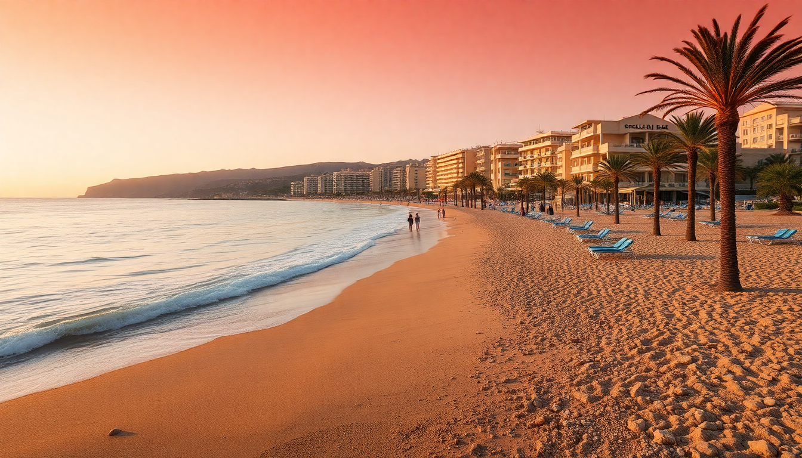

Best Beaches in Spain: Costa del Sol, Balearics & Canaries

I spent three weeks bouncing between the Costa del Sol, Mallorca, and Tenerife, and here’s what I found: each region has a distinct beach personality, and picking the wrong one can ruin your trip. This guide cuts through the Instagram hype and tells you exactly where to plant your towel, where to eat, and what to skip.
Which Costa del Sol beaches near Marbella are worth the hype?
The Costa del Sol delivers if you want glamour mixed with easy swimming, but not all stretches are equal. I based myself in Marbella’s old town and walked the Paseo Marítimo daily.
Top picks near Marbella:
- Playa de la Fontanilla – wide, clean sand right next to the old town. Best for families and people who want a beach bar (chiringuito) within 20 steps.
- Playa de Cabopino – smaller, quieter, with dunes and a nudist section. I preferred this over the packed Puerto Banús beaches.
- Playa de la Bajadilla – local spot near the fishing port. No frills, but the grilled sardines at Chiringuito El Ancla were the best I had on the coast.
- Puerto Banús beaches – skip them unless you want to watch yacht-spotting and pay €12 for a limp sandwich. The sand is artificial and overcrowded.
I stayed at Hotel Lima Marbella (three blocks from Fontanilla) – simple, clean, and half the price of the seafront resorts. For lunch, walk to Bibo Marbella by Dani García for inventive tapas, but book a week ahead.
What are the best beaches in Mallorca beyond the tourist crowds?
Mallorca’s east coast holds the real gems. Most tourists pile into Palma’s city beaches or Magaluf, but I rented a car and drove the backroads to find coves that felt half-empty even in July.
My favorite Mallorcan beaches:
- Cala Mondragó – part of a nature reserve, with two sandy coves linked by a pine-shaded path. The water is absurdly clear. Get there before 9 AM or park a kilometer away.
- Playa de Muro – a long, shallow bay in the north. Perfect for swimming laps or kids. The Hotel Palace Bonanza Playa sits right on the sand, but I stayed at Hotel Son Bauló a ten-minute walk inland for €80/night.
- Cala Varques – unpaved access road, no facilities, but the most secluded cove I found. Bring water and snacks.
- Cala d’Or – a series of small rocky coves with turquoise water. The town itself is a bit resort-y, but Restaurante Ses Puntes serves grilled octopus that justifies the detour.
Skip Cala Llombards – it’s postcard-pretty but shoulder-to-shoulder by 11 AM. Instead, walk twenty minutes north to the unmarked cove locals call “Cala des Macs.”
Which Tenerife beaches work best for a week-long stay?
Tenerife surprised me. Everyone talks about Playa de las Américas, but the island’s north coast has black-sand beaches that feel like another planet. I split my week between the south’s sun and the north’s drama.
Beaches to plan around:
- Playa de las Teresitas (north, near Santa Cruz) – golden sand imported from the Sahara, sheltered by a breakwater. Calm water, family-friendly. I ate lunch at Guachinche El Cordero in La Laguna afterward – a local farmhouse restaurant with €10 set menus.
- Playa Jardín (Puerto de la Cruz) – black volcanic sand designed by César Manrique. The adjacent Lago Martiánez complex (also Manrique) has seawater pools that cost €5 to enter. Better than the beach itself on windy days.
- Playa de la Tejita (south) – wild, wind-swept, and backed by a volcanic cone. No umbrellas, no bars. Bring a windbreaker. It’s a 15-minute drive from Hotel Médano in El Médano, where I stayed for kite-surfing vibes.
- Playa de las Américas – fine for sunbathing, but the strip is a British pub corridor. I’d use it as a base for day trips, not a destination.
For a proper meal in the south, skip the tourist traps on the promenade and go to El Calderito de la Abuela in Los Cristianos – the mojo rojo sauce and papas arrugadas are the real deal.
When is the best time to visit each region?
Timing matters more here than anywhere else in Spain. I made the mistake of hitting Marbella in mid-August and regretted every crowded beach day.
Seasonal breakdown:
- Costa del Sol (Marbella): May-June and September-October. Water is warm enough, crowds thin out, and hotel prices drop 40%. July-August is a furnace with 35°C heat and wall-to-wall sunbeds.
- Mallorca: Late May or early October. June-September is peak season – Cala Mondragó turns into a sardine can. I went in early June and had coves mostly to myself until noon.
- Tenerife: Year-round, but March-April and October-November hit the sweet spot. The south stays sunny even in winter (22°C in January), while the north gets rain and clouds. Avoid Easter week and August if you hate crowds.
How do I get between these regions without wasting time?
Flying is the only practical option unless you have a week to spare for ferries. I booked two internal flights with Ryanair and Iberia Express and paid about €45 each.
Logistics I learned the hard way:
- Marbella to Mallorca: Fly from Málaga (AGP) to Palma (PMI). Málaga airport is 40 minutes from Marbella by bus (€10, Avanza line). Don’t bother with the train – it stops at the coast, not the city center.
- Mallorca to Tenerife: Palma to Tenerife South (TFS) direct. The flight is 2.5 hours. Avoid Tenerife North (TFN) if you’re staying in the south – it’s an hour drive over winding mountain roads.
- Getting around each island: Rent a car in Mallorca (I used Record Go at the airport – cheap, no hidden fees). In Tenerife, the bus network (Titsa) covers most beaches for under €5. I only rented a car for two days to reach Tejita and the north.
FAQ
Is it safe to swim at all these beaches year-round? Generally yes, but pay attention to flags. Tenerife’s north coast (Playa Jardín) has strong currents in winter – red flags are common. Costa del Sol beaches are almost always calm. Mallorca’s coves are sheltered, but open beaches like Playa de Muro can have rip currents after storms. I always check the local bandera system before going in.
Which region is best for solo travelers? Tenerife’s south (El Médano or Los Cristianos) has the most solo-friendly vibe – hostels, surf schools, and easy bus access. Marbella leans couples and groups. Mallorca is mixed, but the east coast coves feel more romantic than social. I felt safest in Tenerife as a solo traveler.
Are there any hidden costs I should budget for? Yes. Sunbed rentals run €8-15 per day on most developed beaches. Parking near Mallorca’s coves costs €5-10 in summer. Chiringuito lunches (grilled fish, salad, wine) average €25-30 per person. Bring cash – many smaller beach bars don’t take cards, especially in the Canaries.
Conclusion
- For glamour and easy access: Stick to Marbella’s Fontanilla or Cabopino, skip Puerto Banús, and eat at Chiringuito El Ancla.
- For secluded coves: Drive Mallorca’s east coast – Cala Mondragó and Cala Varques beat any postcard beach.
- For variety and year-round sun: Base yourself in Tenerife’s south, but spend two days exploring the north’s black sand.
- Book internal flights early – prices triple within two weeks of departure.
- Rent a car in Mallorca, rely on buses in Tenerife, and use the Avanza bus from Málaga airport to save money and stress.